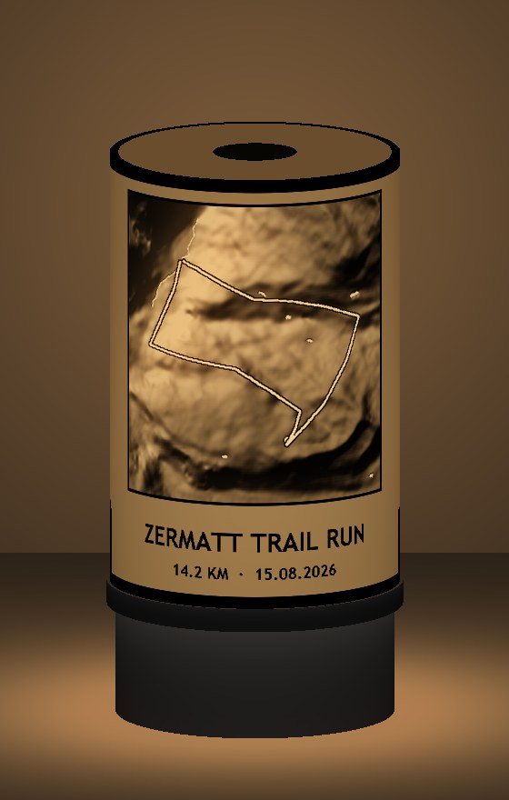
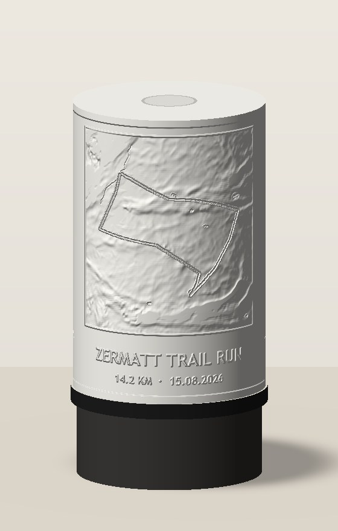
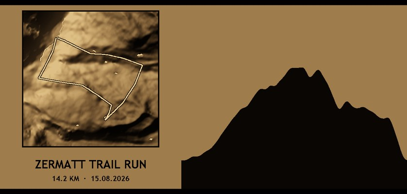
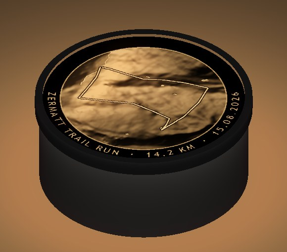
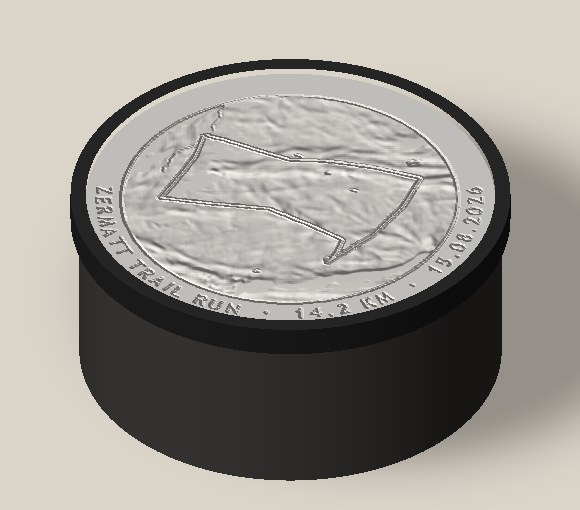

<title>Lithophane Lamp Studies</title>
<meta name="claude:viewport-fit-sides" content="cover">
<link rel="stylesheet" href="https://fonts.googleapis.com/css2?family=Archivo:wdth,wght@75..125,400..800&family=Source+Serif+4:opsz,wght@8..60,400;8..60,600&display=swap">
<style>
/* A workshop concept sheet: renders in pairs (on / off), cut-away drawings beside the words, then the print notes. */
:root {
  --paper: #f3efe7; --ink: #1d1b17; --muted: #6b655b; --line: #d9d2c4; --card: #faf8f3; --accent: #b4532a;
  --glow: #e39a35; --glow-soft: #f6dcb0; --solid: #2a2826;
  --display: "Archivo", "Helvetica Neue", Arial, sans-serif; --body: "Source Serif 4", Georgia, serif;
}
@media (prefers-color-scheme: dark) { :root:not([data-theme="light"]) { --paper: #15140f; --ink: #ece7dc; --muted: #a39c8f; --line: #3a362e; --card: #1d1b16; --accent: #f08a5d; --glow: #f2b45a; --glow-soft: #4a3720; --solid: #4a4640; color-scheme: dark } }
:root[data-theme="dark"] { --paper: #15140f; --ink: #ece7dc; --muted: #a39c8f; --line: #3a362e; --card: #1d1b16; --accent: #f08a5d; --glow: #f2b45a; --glow-soft: #4a3720; --solid: #4a4640; color-scheme: dark }
body { background: var(--paper); color: var(--ink); font: 17px/1.55 var(--body); padding-block: 2.5rem 4rem;
  padding-left: max(16px, env(safe-area-inset-left, 0px)); padding-right: max(16px, env(safe-area-inset-right, 0px)); }
main { max-width: 1100px; margin: 0 auto; display: grid; gap: 2.25rem; }
h1, h2, h3 { font-family: var(--display); text-wrap: balance; margin: 0; }
h1 { font-size: clamp(2rem, 4vw, 2.9rem); font-weight: 800; font-stretch: 90%; letter-spacing: -0.02em; line-height: 1.05; }
h2 { font-size: 1.5rem; font-weight: 700; font-stretch: 95%; }
h3 { font-size: 1.02rem; font-weight: 700; }
p { max-width: 68ch; margin: 0; }
.lede { font-size: 1.15rem; }
.eyebrow { font-family: var(--display); font-size: 0.75rem; letter-spacing: 0.12em; text-transform: uppercase; color: var(--muted); }
header, .stack { display: grid; gap: 1rem; }
.note { border-left: 3px solid var(--accent); padding-left: 1rem; color: var(--muted); font-size: 0.95rem; }
section { display: grid; gap: 1.5rem; padding-top: 2rem; border-top: 1px solid var(--line); }
.pair { display: grid; grid-template-columns: repeat(2, minmax(0, 1fr)); gap: 1rem; align-items: end; }
@media (max-width: 640px) { .pair { grid-template-columns: 1fr; } }
figure { margin: 0; display: grid; gap: 0.4rem; min-width: 0; }
figure img { width: 100%; height: auto; display: block; border-radius: 3px; }
figcaption { font-family: var(--display); font-size: 0.8rem; color: var(--muted); }
.split { display: grid; grid-template-columns: minmax(0, 1fr) minmax(0, 1fr); gap: 2rem; align-items: start; }
@media (max-width: 820px) { .split { grid-template-columns: 1fr; } }
.tags { display: flex; flex-wrap: wrap; gap: 0.5rem; font-family: var(--display); font-size: 0.78rem; }
.tag { border: 1px solid var(--line); border-radius: 999px; padding: 0.15rem 0.65rem; color: var(--muted); }
.tag.rec { color: var(--accent); border-color: currentColor; }
ul { margin: 0; padding-left: 1.2rem; display: grid; gap: 0.45rem; max-width: 68ch; }
li::marker { color: var(--muted); }
.cut { background: var(--card); border: 1px solid var(--line); padding: 1rem; min-width: 0; }
.cut svg { width: 100%; height: auto; display: block; }
.cut .solid { fill: var(--solid); }
.cut .print { fill: var(--line); stroke: var(--ink); stroke-width: 1; }
.cut .litho { fill: var(--card); stroke: var(--ink); stroke-width: 1.2; }
.cut .led { fill: var(--glow); }
.cut .ray { stroke: var(--glow); stroke-width: 2; fill: none; marker-end: url(#tip); }
.cut .ray2 { stroke: var(--glow); stroke-width: 2; fill: none; marker-end: url(#tip2); }
.cut .lead { stroke: var(--muted); stroke-width: 1; fill: none; }
.cut .press { stroke: var(--accent); stroke-width: 2.5; fill: none; }
.cut text { font-family: var(--display); font-size: 12.5px; fill: var(--ink); }
.cut text.m { fill: var(--muted); font-size: 11.5px; }
.cut text.a { fill: var(--accent); font-weight: 700; }
.tablewrap { overflow-x: auto; }
table { border-collapse: collapse; width: 100%; min-width: 620px; font-size: 0.93rem; }
th, td { text-align: left; padding: 0.55rem 0.7rem; border-bottom: 1px solid var(--line); vertical-align: top; }
th { font-family: var(--display); font-size: 0.78rem; letter-spacing: 0.06em; text-transform: uppercase; color: var(--muted); font-weight: 600; }
td:first-child { font-family: var(--display); font-weight: 600; white-space: nowrap; }
.ask { background: var(--card); border: 1px solid var(--line); padding: 1.25rem 1.4rem; display: grid; gap: 0.75rem; }
</style>

<main>
<header>
  <div class="eyebrow">Activity Path Poster · lithophane studies, 25 Oct 2026</div>
  <h1>Your round light, with the route glowing in it</h1>
  <p class="lede">Two ways to put a lithophane on the light you already sell. The lantern is a shade that stands on the light and is seen from the side, like a lamp. The lid is a disc that sits on top and is seen from above. Both keep the button on top working.</p>
  <p class="note">These are sketches rendered from the generated Zermatt test run, not print files. The light's size is assumed at 96 mm across and 38 mm tall, with the button in the middle of the top. Your real dimensions will change the proportions, not the idea.</p>
</header>

<section>
  <div class="stack">
    <h2>How a lithophane works</h2>
    <p>A lithophane is one white print whose thickness is the picture. Thin plastic lets the light through and glows. Thick plastic stays dark. Switched off it is a white relief, and switched on the picture appears. That suits the poster family well: off, the terrain is a white relief; on, the map lights up.</p>
    <ul>
      <li><strong>Mountains are thick</strong> and read dark. Valleys are thinner and glow.</li>
      <li><strong>Lakes are thinner still</strong> and show as bright spots.</li>
      <li><strong>The route is the thinnest line</strong>, the brightest thing on the lamp, with a dark edge so it stands out.</li>
      <li><strong>Text is thick</strong>, so the caption reads as dark letters against the glow.</li>
    </ul>
  </div>
</section>

<section>
  <div class="stack">
    <div class="tags"><span class="tag rec">Recommended for the product</span><span class="tag">Seen from the side</span></div>
    <h2>A. The lantern shade</h2>
    <p>A tube about 150 mm tall stands on the light. The map is on the front, the caption under it, and the climb of the run wraps around the back as a mountain skyline. A printed collar clips onto the light, and the shade lifts off for charging.</p>
  </div>
  <div class="pair">
    <figure><figcaption>Switched on</figcaption></figure>
    <figure><figcaption>Switched off: a white terrain relief</figcaption></figure>
  </div>
  <figure><figcaption>The whole shade unrolled, as the lamp lights it. The skyline is the elevation along the run.</figcaption></figure>
  <div class="split">
    <div class="stack">
      <h3>The light points up, not sideways</h3>
      <p>On its own, your light would brighten the lid and leave the walls dim. A white light column stands on the button inside the shade. It catches the upward light and spreads it onto the walls.</p>
      <h3>The button stays on top</h3>
      <p>The same column carries the press. The top of the column pokes through the lid as a button cap. Press the top of the lantern and the column presses your button.</p>
      <p>That only works if the button is a push button. If it is a touch sensor, a plastic column will not trigger it. Then the collar leaves the button reachable, or we try a column printed in conductive filament.</p>
    </div>
    <div class="cut" role="img" aria-label="Cut-away of the lantern: the light at the bottom, a collar clipped on its rim, the lithophane shade walls, a lid, and a light column standing on the button and poking through the lid as the press point">
      <svg viewBox="0 0 520 380" xmlns="http://www.w3.org/2000/svg">
        <defs>
          <marker id="tip" viewBox="0 0 8 8" refX="7" refY="4" markerWidth="7" markerHeight="7" orient="auto"><path d="M0 0L8 4L0 8z" fill="var(--glow)"/></marker>
        </defs>
        <!-- light -->
        <rect class="solid" x="78" y="300" width="144" height="57" rx="6"/>
        <rect class="led" x="104" y="304" width="92" height="5" rx="2"/>
        <rect class="solid" x="141" y="294" width="18" height="6" rx="1.5"/>
        <!-- collar -->
        <path class="print" d="M72 312 L72 286 L88 286 L88 292 L78 292 L78 312 Z"/>
        <path class="print" d="M228 312 L228 286 L212 286 L212 292 L222 292 L222 312 Z"/>
        <!-- shade walls -->
        <path class="litho" d="M75 286 L75 61 L79 61 L79 90 L78 110 L79.5 140 L78 170 L79.5 205 L78 240 L79 286 Z"/>
        <path class="litho" d="M225 286 L225 61 L221 61 L221 95 L222 125 L220.5 160 L222 190 L220.5 230 L222 286 Z"/>
        <!-- lid -->
        <path class="print" d="M72 61 L72 53 L139 53 L139 61 Z M161 61 L161 53 L228 53 L228 61 Z"/>
        <!-- light column -->
        <path class="print" d="M143 294 L141 66 L139 66 L139 44 L161 44 L161 66 L159 66 L157 294 Z" style="fill:var(--glow-soft)"/>
        <!-- rays -->
        <path class="ray" d="M118 300 L130 250"/><path class="ray" d="M182 300 L170 250"/>
        <path class="ray" d="M140 220 L90 200"/><path class="ray" d="M160 220 L210 200"/>
        <path class="ray" d="M140 150 L90 132"/><path class="ray" d="M160 150 L210 132"/>
        <!-- press -->
        <path class="press" d="M150 14 L150 38"/><path d="M144 32 L150 40 L156 32" class="press"/>
        <text class="a" x="162" y="24">Press here</text>
        <!-- labels -->
        <path class="lead" d="M222 120 L262 120"/><text x="268" y="116">Lithophane shade</text><text class="m" x="268" y="132">white PLA, 0.6 to 3 mm thick</text>
        <path class="lead" d="M158 180 L262 180" style="stroke-dasharray:3 3"/><text x="268" y="176">Light column</text><text class="m" x="268" y="192">spreads the light onto the walls</text><text class="m" x="268" y="207">and carries the press down</text>
        <path class="lead" d="M228 57 L262 57"/><text x="268" y="61">Lid</text>
        <path class="lead" d="M228 298 L262 298"/><text x="268" y="294">Printed collar</text><text class="m" x="268" y="310">clips on, lifts off</text>
        <path class="lead" d="M222 340 L262 340"/><text x="268" y="336">Your light</text><text class="m" x="268" y="352">button in the middle of the top</text>
      </svg>
    </div>
  </div>
</section>

<section>
  <div class="stack">
    <div class="tags"><span class="tag">Fastest to try</span><span class="tag">Seen from above</span></div>
    <h2>B. The glowing lid</h2>
    <p>A round lithophane disc sits on top of the light inside a thin printed ring. Your light already shines straight at it, so it is lit evenly with no extra parts. The caption runs around the edge. Pressing the map switches the light on.</p>
  </div>
  <div class="pair">
    <figure><figcaption>Switched on</figcaption></figure>
    <figure><figcaption>Switched off</figcaption></figure>
  </div>
  <div class="split">
    <div class="stack">
      <p>It works best where people look down at it: a nightstand, a desk or a coffee table. On a shelf at eye level you would only see the edge.</p>
      <p>A small nub under the middle of the disc sits just above your button, so the disc can rest on the ring without switching the light. A firm press on the map pushes the nub onto the button.</p>
      <p>This is also the cheapest test. One flat print on the light you have shows how bright and even your LED is through 0.6 to 3 mm of white plastic. That answer decides both concepts.</p>
    </div>
    <div class="cut" role="img" aria-label="Cut-away of the lid: the light, a ring clipped on its rim, a lithophane disc resting in the ring, and a nub under the disc just above the button">
      <svg viewBox="0 0 520 220" xmlns="http://www.w3.org/2000/svg">
        <defs>
          <marker id="tip2" viewBox="0 0 8 8" refX="7" refY="4" markerWidth="7" markerHeight="7" orient="auto"><path d="M0 0L8 4L0 8z" fill="var(--glow)"/></marker>
        </defs>
        <rect class="solid" x="40" y="120" width="160" height="80" rx="7"/>
        <rect class="led" x="70" y="125" width="100" height="5" rx="2"/>
        <rect class="solid" x="110" y="113" width="20" height="7" rx="1.5"/>
        <path class="print" d="M34 136 L34 86 L40 86 L40 98 L50 98 L50 102 L40 102 L40 136 Z"/>
        <path class="print" d="M206 136 L206 86 L200 86 L200 98 L190 98 L190 102 L200 102 L200 136 Z"/>
        <path class="litho" d="M41 98 L41 93 L60 92 L80 93.5 L100 91.5 L120 93 L140 91 L160 93.5 L180 92 L199 93 L199 98 Z"/>
        <rect class="litho" x="114" y="98" width="12" height="10"/>
        <path class="ray2" d="M80 120 L80 104"/><path class="ray2" d="M160 120 L160 104"/><path class="ray2" d="M100 120 L100 104"/><path class="ray2" d="M140 120 L140 104"/>
        <path class="press" d="M150 40 L150 82"/><path d="M144 76 L150 84 L156 76" class="press"/>
        <text class="a" x="160" y="52">Press the map</text>
        <path class="lead" d="M198 96 L262 70"/><text x="268" y="66">Lithophane disc</text><text class="m" x="268" y="82">about 2 mm, flat print</text>
        <path class="lead" d="M126 104 L262 108"/><text x="268" y="106">Nub</text><text class="m" x="268" y="122">rests just above the button</text>
        <path class="lead" d="M206 120 L262 148"/><text x="268" y="146">Printed ring</text><text class="m" x="268" y="162">clips on the light's rim</text>
        <path class="lead" d="M200 186 L262 190"/><text x="268" y="194">Your light</text>
      </svg>
    </div>
  </div>
</section>

<section>
  <h2>Side by side</h2>
  <div class="tablewrap">
  <table>
    <thead><tr><th></th><th>A. Lantern shade</th><th>B. Glowing lid</th></tr></thead>
    <tbody>
      <tr><td>Seen from</td><td>The side, like a lamp</td><td>Above: nightstand, desk, coffee table</td></tr>
      <tr><td>Picture</td><td>Map about 104 mm square, caption, and the climb all the way around</td><td>Round map about 77 mm across, caption around the edge</td></tr>
      <tr><td>Parts</td><td>Collar, shade, lid, light column</td><td>Ring and disc</td></tr>
      <tr><td>Light</td><td>Needs the light column to reach the walls</td><td>Lit straight from behind</td></tr>
      <tr><td>Button</td><td>Press the top of the lantern</td><td>Press the map</td></tr>
      <tr><td>Print</td><td>One tall white print, printed upright</td><td>One small flat white print</td></tr>
      <tr><td>In the tool</td><td>The map as a thickness heightmap, wrapped into a tube</td><td>The map as a thickness heightmap, cut to a circle</td></tr>
    </tbody>
  </table>
  </div>
  <p>Both reuse what the poster tool already has. The terrain and route become a thickness map instead of colour bodies, and the existing mesher turns heightmaps into prints. Only one filament, so no prime tower and no colour changes.</p>
</section>

<section>
  <div class="stack">
    <h2>Printing your first lithophane</h2>
    <ul>
      <li><strong>Plain white PLA.</strong> Brands pass different amounts of light, so test the spool you will sell with.</li>
      <li><strong>Print it solid.</strong> The whole thickness has to be walls or 100% infill, or the infill pattern shows when the light is on.</li>
      <li><strong>Fine detail goes sideways.</strong> The printer draws sideways more finely than it stacks layers, which is why the lantern is printed upright. A flat disc needs fine layers, about 0.08 to 0.12 mm.</li>
      <li><strong>Check the heat once.</strong> PLA softens from about 55 °C. Leave the light on for an hour and feel the top; LEDs normally stay well below that.</li>
      <li><strong>Colour can come later.</strong> The AMS can stack coloured layers so lakes glow blue and the route glows in the theme's colour. Start with white.</li>
    </ul>
  </div>
</section>

<section>
  <div class="ask">
    <h2>What I need to draw the real parts</h2>
    <ul>
      <li><strong>Size:</strong> the diameter and height of the light, and what the top edge looks like, since the collar clips there.</li>
      <li><strong>Button:</strong> push or touch, where it sits, and how big it is.</li>
      <li><strong>Light:</strong> warm or cool white, how bright, and whether the whole top glows or only a ring.</li>
      <li><strong>Photos:</strong> one from the side and one from the top.</li>
    </ul>
    <p>With those I would print the glowing lid as a test on your light first, then draw the lantern collar and light column from what the test shows.</p>
  </div>
</section>
</main>
